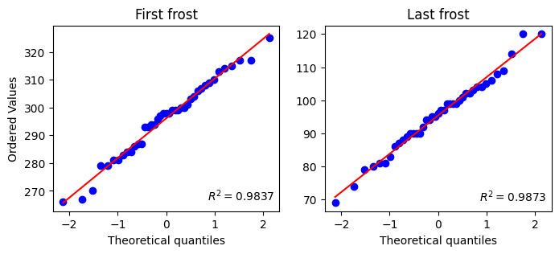
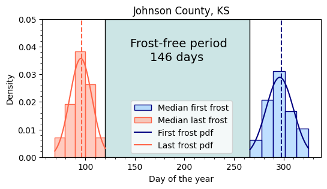
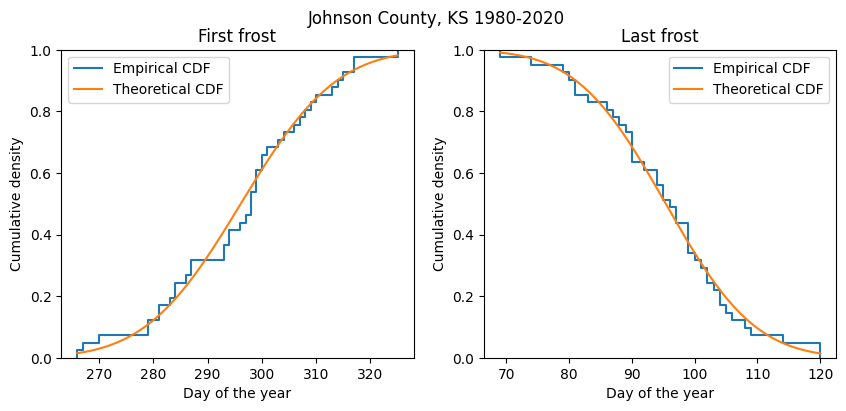

# Import modules
import numpy as np
import pandas as pd
import matplotlib.pyplot as plt
from scipy import stats41 First and last frost
The concept of first and last frost dates is essential in the context of gardening and agriculture, as it helps in determining the suitable planting and harvesting times. A frost date typically refers to when temperatures are expected to fall to the threshold level that can cause damage to plants. This is generally at or below 0°C. It’s important to note that these frost dates are not absolute but are probabilistic estimates based on historical data.
In addition to the first and last frost dates, the concept of the “frost-free window” or “growing season” refers to the period between the last spring frost and the first fall frost, during which temperatures are generally above the freezing point.
The length of the frost-free window varies depending on the geographical location and local climatic conditions. For instance, in warmer regions, this period may be quite long, allowing for an extended growing season suitable for a wide variety of crops. In contrast, colder regions may have a shorter frost-free window, limiting the types of plants that can be grown.
In this exercise we will use a long-term dataset from 1980 to 2020 to estimate the:
- typical date for first and last frost
- frost-free period
- probability density and cumulative density functions
# Read data
df = pd.read_csv('../datasets/Johnson_Kansas.csv', parse_dates=['timestamp'])
df.head(3)| id | longitude | latitude | timestamp | doy | pr | rmax | rmin | sph | srad | ... | tmmn | tmmx | vs | erc | eto | bi | fm100 | fm1000 | etr | vpd | |
|---|---|---|---|---|---|---|---|---|---|---|---|---|---|---|---|---|---|---|---|---|---|
| 0 | 19800101 | -94.822258 | 38.883761 | 1980-01-01 | 1 | 0.0 | 77.683876 | 43.286247 | 0.002620 | 8.263647 | ... | -3.557654 | 7.847253 | 2.192723 | 40.656410 | 1.040586 | 29.367460 | 13.726248 | 13.835570 | 1.627161 | 0.353715 |
| 1 | 19800102 | -94.822258 | 38.883761 | 1980-01-02 | 2 | 0.0 | 78.571579 | 35.635567 | 0.002420 | 7.208553 | ... | -3.577643 | 5.967126 | 3.296802 | 41.918404 | 1.219669 | 35.399471 | 13.522950 | 13.820871 | 1.931061 | 0.320570 |
| 2 | 19800103 | -94.822258 | 38.883761 | 1980-01-03 | 3 | 0.0 | 82.316978 | 39.000980 | 0.001985 | 5.930851 | ... | -7.448096 | 0.307275 | 3.042193 | 40.172096 | 0.770442 | 32.923172 | 13.797589 | 13.864967 | 1.172392 | 0.174911 |
3 rows × 21 columns
# Add year column. This will help us grouping analyses by year.
df['year'] = df['timestamp'].dt.yearFind date of last frost
# Define variables for last frost
lf_start_doy = 1
lf_end_doy = 183 # Around July 15 (to be on the safe side)
freeze_temp = 0 # Celsius# Get unique years
unique_years = df['year'].unique()
lf_doy = []
for year in unique_years:
idx_year = df['year'] == year
idx_lf_period = (df['doy'] > lf_start_doy) & (df['doy'] <= lf_end_doy)
idx_frost = df['tmmn'] < freeze_temp
idx = idx_year & idx_lf_period & idx_frost
# Select all DOY for current year that meet all conditions.
# Sort in ASCENDING order. The last value was the last freezing DOY
all_doy_current_year = df.loc[idx, 'doy'].sort_values()
lf_doy.append(all_doy_current_year.iloc[-1])
Find date of first frost
# Define variables for first frost
ff_start_doy = 183 # Around July 15 (to be on the safe side)
ff_end_doy = 365# Get unique years
ff_doy = []
for year in unique_years:
idx_year = df['year'] == year
idx_ff_period = (df['doy'] > ff_start_doy) & (df['doy'] <= ff_end_doy)
idx_frost = df['tmmn'] < freeze_temp
idx = idx_year & idx_ff_period & idx_frost
# Select all DOY for current year that meet all conditions.
# Sort in DESCENDING order. The last value was the last freezing DOY
all_doy_current_year = df.loc[idx, 'doy'].sort_values(ascending=False)
ff_doy.append(all_doy_current_year.iloc[-1])
Find median date for first and last frost
# Create dataframe with the first and last frost for each year
# The easiest is to create a dictionary with the variables we already have
df_frost = pd.DataFrame({'year':unique_years,
'first_frost_doy':ff_doy,
'last_frost_doy':lf_doy})
df_frost.head(3)| year | first_frost_doy | last_frost_doy | |
|---|---|---|---|
| 0 | 1980 | 299 | 104 |
| 1 | 1981 | 296 | 79 |
| 2 | 1982 | 294 | 100 |
# Print median days of the year
df_frost[['first_frost_doy','last_frost_doy']].median()first_frost_doy 298.0
last_frost_doy 96.0
dtype: float64# Compute median DOY and calculate date for first frost
first_frost_median_doy = df_frost['first_frost_doy'].median()
first_frost_median_date = pd.to_datetime('2000-01-01') + pd.Timedelta(first_frost_median_doy, 'days')
print(f"Median date first frost: {first_frost_median_date.strftime('%d-%B')}")
first_frost_earliest_doy = df_frost['first_frost_doy'].min() # Min value for earliest first frost
first_frost_earliest_date = pd.to_datetime('2000-01-01') + pd.Timedelta(first_frost_earliest_doy, 'days')
print(f"Earliest date first frost on record: {first_frost_earliest_date.strftime('%d-%B')}")
# Compute median DOY and calculate date for first frost
last_frost_median_doy = df_frost['last_frost_doy'].median()
last_frost_median_date = pd.to_datetime('2000-01-01') + pd.Timedelta(last_frost_median_doy, 'days')
print(f"Median date last frost: {last_frost_median_date.strftime('%d-%B')}")
last_frost_latest_doy = df_frost['last_frost_doy'].max() # Max value for latest last frost
last_frost_latest_date = pd.to_datetime('2000-01-01') + pd.Timedelta(last_frost_latest_doy, 'days')
print(f"Latest date last frost on record: {last_frost_latest_date.strftime('%d-%B')}")Median date first frost: 25-October
Earliest date first frost on record: 23-September
Median date last frost: 06-April
Latest date last frost on record: 30-AprilCompute frost-free period
# Period without any risk of frost
frost_free = first_frost_earliest_doy - last_frost_latest_doy
print(f'Frost-free period: {frost_free} days')Frost-free period: 146 daysProbability density functions
Let’s first examine if a normal distribution fits the observations using probability plots, which compare the distribution of our data against the quantiles of a specified theoretical distribution (normal distribution in this case, similar to qq-plots). If the agreement is good, then this provides some support for using the selected distribution.
# Check distribution of data
plt.figure(figsize=(8,3))
plt.subplot(1,2,1)
stats.probplot(df_frost['first_frost_doy'], dist="norm", rvalue=True, plot=plt)
plt.title('First frost')
plt.subplot(1,2,2)
stats.probplot(df_frost['last_frost_doy'], dist="norm", rvalue=True, plot=plt)
plt.title('Last frost')
plt.ylabel('')
plt.show()
# Fit normal distributions
fitted_pdf_ff = stats.fit(stats.norm, df_frost['first_frost_doy'], bounds=((180,365),(1,25)))
print(fitted_pdf_ff.params)
fitted_pdf_lf = stats.fit(stats.norm, df_frost['last_frost_doy'], bounds=((1,180),(1,25)))
print(fitted_pdf_lf.params)FitParams(loc=296.12195397938365, scale=13.816206118531046)
FitParams(loc=95.39034225034837, scale=11.17897667307393)# Create vector for the normal pdf of first frost
x_ff = np.linspace(df_frost['first_frost_doy'].min(),
df_frost['first_frost_doy'].max(),
num=1000)
# Create vector for the normal pdf of last frost
x_lf = np.linspace(df_frost['last_frost_doy'].min(),
df_frost['last_frost_doy'].max(),
num=1000)# Figure of free-frost period
plt.figure(figsize=(6,3))
plt.title('Johnson County, KS')
# Add histograms for first and last frost
plt.hist(df_frost['first_frost_doy'], bins='scott', density=True,
label='Median first frost', facecolor=(0,0.5,1,0.25), edgecolor='navy')
plt.hist(df_frost['last_frost_doy'], bins='scott', density=True,
label='Median last frost', facecolor=(1,0.2,0,0.25), edgecolor='tomato')
# Add median lines
plt.axvline(last_frost_median_doy, linestyle='--', color='tomato')
plt.axvline(first_frost_median_doy, linestyle='--', color='navy')
# Overlay fitted distributions to each histogram
plt.plot(x_ff, stats.norm.pdf(x_ff, *fitted_pdf_ff.params),
color='navy', label='First frost pdf')
plt.plot(x_lf, stats.norm.pdf(x_lf, *fitted_pdf_lf.params),
color='tomato', label='Last frost pdf')
# Add filled area to show the frost-free period
plt.fill_betweenx(np.linspace(0,0.05), last_frost_latest_doy, first_frost_earliest_doy,
facecolor=(0, 0.5, 0.5, 0.2), edgecolor='k')
# Add some annotations
plt.text(145, 0.04, "Frost-free period", size=14)
plt.text(165, 0.035, f"{frost_free} days", size=14)
plt.ylim([0, 0.05])
plt.xlabel('Day of the year')
plt.ylabel('Density')
plt.minorticks_on()
plt.legend()
plt.show()
# Cumulative distributions
# Create vector from 0 to x_max to plot the lognorm pdf
x = np.linspace(df_frost['first_frost_doy'].min(),
df_frost['first_frost_doy'].max(),
num=1000)
plt.figure(figsize=(10,4))
plt.suptitle('Johnson County, KS 1980-2020')
# First frost
plt.subplot(1,2,1)
plt.ecdf(df_frost['first_frost_doy'], label="Empirical CDF")
plt.plot(x_ff, stats.norm.cdf(x_ff, *fitted_pdf_ff.params), label='Theoretical CDF')
plt.title('First frost')
plt.xlabel('Day of the year')
plt.ylabel('Cumulative density')
plt.legend()
# Last frost (note the use of the complementary CDF)
plt.subplot(1,2,2)
plt.ecdf(df_frost['last_frost_doy'], complementary=True, label="Empirical CDF")
plt.plot(x_lf, 1-stats.norm.cdf(x_lf, *fitted_pdf_lf.params), label='Theoretical CDF')
plt.title('Last frost')
plt.xlabel('Day of the year')
plt.ylabel('Cumulative density')
plt.legend()
plt.show()
# Determine the probability of a first frost occurying on or before:
doy = 245 # September 1
stats.norm.cdf(doy, *fitted_pdf_ff.params)
# As expected, if you change the DOY for a value closer to July 1,
# the chances of frost in the north hemisphere are going to decrease to nearly zero.0.00010773852588002489# Determine the probability of a frost occurying on or after:
doy = 122 # May 1
stats.norm.sf(doy, *fitted_pdf_lf.params)
# As expected, if you change the DOY for a value closer to January 1,
# the chances of frost in the north hemisphere are going to increase to 1 (or 100%).0.008648561213750895
Note
Why did we use the complementary of the CDF for determining the probability of last frost? We used the complementary CDF (or sometimes known as the survival function, hence the syntax .sf(), because in most cases we are interested in knowing the probability of a frost “on or after” a given date. For instance, a farmer that is risk averse will prefer to plant corn when the chances of a late frost that can kill the entire crop overnight is very low.